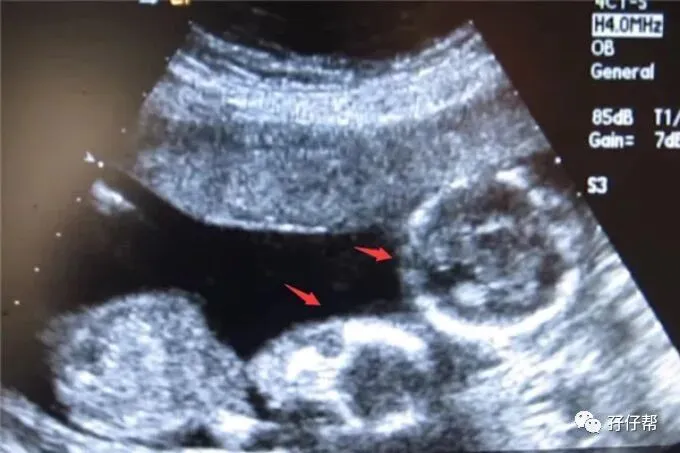
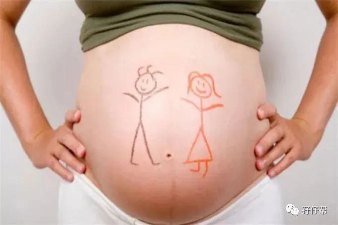
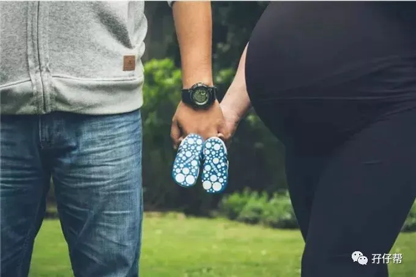
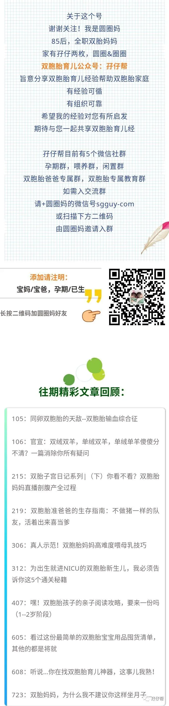

⬆⬆关注孖仔帮，与您分享双胞胎育儿经⬆⬆
文|圆圈妈 一个文思如尿崩的双胎妈妈
图|来自网络
双胎妊娠的孕18周
【01】两胎儿的发育情况
孕18周的胎宝宝有地瓜那么大了，从头部到臀部长14.9CM，约188G，如图所示⏬⏬
孕18周的双胞胎胎儿发育图⏬⏬：
B超孕18周的双胞胎胎儿影像图⏬⏬：
【02】圆圈妈的孕期回忆录
ℹ进入孕18周，我发现胎动的蛛丝马迹
有一晚上，刚洗完澡斜躺在床上，习惯性地看下肚子，居然发现左上腹微微鼓起一层小小的波浪，里面好像有东西如做贼一般，一闪而过，稍纵即逝。
我很确定我不是眼花，那种感觉就是有一只害羞的小鱼在我肚子里面练习吐泡泡，又像是有一只瘦弱的小蝴蝶在轻轻地拍打着翅膀...
纳尼？莫不是胎动。
我尖叫一声，喊圆圈爸过来确认，可是我们盯着肚皮看了半晌依然没有动静。
圆圈爸扔给我一个“我咋胡”的表情就闪了，留下我一人依然激动着，细细品尝着刚才那一瞬间的“胎动”。
ℹ我的温饱问题有着落了
因为我和圆圈爸的温饱问题解决不了，我的婆婆来了，照顾我们两口子的起居饮食。
圆圈爸说，这是无奈之举！
是的，我明白，圆圈爸要做出这样的决定，想必也是痛苦挣扎了一番。
圆圈爸是湖南汉子，我是广东妹子，妥妥的湘粤结合。
众所周知，大多数广东人不吃辣，而我是一丁点辣都吃不得，吃惯了粤式清淡偏甜的口味，居然要换香辣的湘菜口味，这无异于火星撞地球！
再加上孕期诡异的口味使然，如有时候很想吃垃圾食品，如薯条，汉堡….有时候又很想吃重口味的食物，有时候只想喝点白粥清汤….
总之，连我自己也搞不清楚，什么时候我的味蕾早已不在我的管辖范围。
ℹ我眼中的“第三者”
小小的一室一厅多了一个人，我很不习惯，第一次跟婆婆相处，我觉得非常束手束脚，别扭极了。
我再也不能像往常一样大声使唤圆圈爸了，我怕婆婆不理解，以为她儿子惨遭媳妇虐待。
果然不出所料，我对 “大厨级别”的婆婆做的饭菜，食不得，咽不下…总是有强烈的抵触心理，经常把婆婆急的暗地里抹泪。
于是，她经常用一种像去拆地雷似的语气问我：“想吃什么菜？要怎么煮？”
而我真的相当烦别人老问我想吃什么菜...我去一趟菜市场都会晕上半天，这种问题拿来问我真的会有答案吗？
哎！婆媳相处，没有对与错。
她很无辜，与我生分得很，却要为了我肚子里的两孩子，变着法子做各种菜式，只为博我全天饱。
我也很惨，一个很难相处，极端龟毛又有洁癖的女人，也是为了肚子里的两孩子，装着很好吃的样子，只为博她一个笑脸。
为了照顾下她老人家的感受，也为了维护天下太平，我只能对着偶尔很咸，偶尔很淡，偶尔粤菜+湘菜“胡搅蛮缠”在一起的饭菜，一鼓作气吞进去。
圆圈爸调侃说：“等有钱了就开一家菜馆，名字已经想好了，就叫湘粤一起。”
呵呵…这码农的小心思，真一根筋！不会做“和事佬”就算了，还在一旁添油加醋...
欠扁！
虽然饭菜不合口味，但是管饱，我算是彻底解放双手了，只管衣来伸手饭来张口，日子过得比猪还滋润。
婆婆给我准备好带去公司吃的午餐便当，知道我随时都会饿，顺便把下午茶也准备好。
下午茶通常是红豆粥，红薯和玉米，或者大骨汤。有时候我实在吃腻了，就在外面买全麦面包，苏打饼干...
✅✅TIPS✅✅： 如果你孕期需要人照顾，思来想去决定让婆婆来，那真的是失策...
如果你明知道婆媳相处会有矛盾，还是让婆婆来，那真的是作死...
如果你迫不得已不得不出此下策，只好让婆婆来，那就做好撕逼的准备...
如此，一点都不夸张。
孕激素分泌过多使然，你的脾气，口味…甚至三观都会发生翻天覆地的变化，连你都无法控制自已，还怎么跟一个处处想要操控你的人相处？
孕期的你如果需要人照顾，请亲妈来或者请保姆，若经济不允许，那就辛苦下自己，只要不是绝对卧床的处境，适当做点家务活也不是件难事。
ℹ我开始水肿了
这周开始，我发现我开始水肿了。
当时正在上班，突然感觉手指好像不能正常弯曲，伸不开，握不紧，手指末梢还有轻微刺疼感，敲着电脑键盘都不灵活了。
尤其是脚板处，按下去会凹下去一片，要过一会儿才恢复正常。
还好不是很明显，我站起来去外面走动了下，水肿会很快缓解消失。
ℹ我性情大变
可能是饮食口味改变了，我的脾气越来越大了。
虽然我本来就脾气不好，可是现在变本加厉了，好像我身上所有脾气细胞正在蓬勃发展，愈演愈烈...
我总是会莫名其妙不爽，生闷气，看见什么都觉得不顺眼。
可怜的圆圈爸躺着也中枪，有时候想笑一下，都会被我怒瞪一眼：“笑什么？有什么好笑的！”
于是，他看视频调成了静音，想笑就用双手蒙住脸...
除此之外，我的强迫症和多疑症被我无限扩大化了，只要当天没吃好睡好，我就会祥林嫂附身似的一直念叨...
“怎么办，今天没吃多少，两个崽会不会吃不饱啊？会不会发育不好啊….”
“怎么办，为什么还感觉不到胎动，是不是有问题。”
“怎么办，听说18周很容易出现TTTs….会不会发生在我身上啊？”
我甚至很后悔为什么16周不做B超，然后又责怪圆圈爸瞎掺和给意见，导致我没有下定决心做B超。
✅✅TIPS✅✅：孕期马上进入一半了，你会感慨时间过得好慢，好不容易一路摸滚带爬地过来了，发现居然还有一大半的路要走，卸货之日遥不可及。
你此时会更加心情烦躁，焦虑，会莫名其妙地发脾气，看见什么都不顺眼，哪怕你的队友啥事情都没做，都能激怒到你。
简而言之，你就是一只随时都会炸毛的母狮子，易怒，易激惹，易攻击...
此时，应该多跟同频道的准妈妈交流下，说下今天的心情，胎动，吃的美食，买的孕妇装…
我排解这种坏脾气的方法比较龌龊：潜水在孕期群，光看不说话，与别的孕妈“比惨”。
看别的孕妈都中央型前置胎盘了还整天笑呵呵的，我心里惭愧极了，然后恍然大悟，我这点屁事算啥，人家比我惨多了，不也是该吃就吃，该拉就拉...
这里对准爸爸提个醒：大多数宝爸都会无可避免地充当孕妈负面情绪爆发时的垃圾回收站。
别说了！
为了娘三，也为了自己，能忍则忍，忍不了还是继续忍。
孕期激素絮乱，可不是跟你玩虚的，媳妇开心了，才能天下太平。
记住，你要是词穷就别说话，任劳任怨就行了，哪怕被揉捏成团也要做包子铺的“镇店之宝”，敢于牺牲，成全娘三！
而且，你还必须要鼓励你媳妇虐你，让她发泄出来，别闷在心上，不然迟早会积怨成疾。
┈☞未完待续☜┉
上期推文:
连载（一）|圆圈妈双胞胎怀孕过程第4周
连载（二）|圆圈妈双胞胎怀孕过程第5周
连载（三）|圆圈妈双胞胎怀孕过程第6周
连载（四）|圆圈妈双胞胎怀孕过程第7周
连载（五）|圆圈妈双胞胎怀孕过程第8周
连载（六）|圆圈妈双胞胎怀孕过程第9周
连载（七）|圆圈妈双胞胎怀孕过程第10周
连载（八）|圆圈妈双胞胎怀孕过程第11周
连载（九）|圆圈妈双胞胎怀孕过程第12周
连载（十）|圆圈妈双胞胎怀孕过程第13周
连载（十一）|圆圈妈双胞胎怀孕过程第14周
连载（十二）|圆圈妈双胞胎怀孕过程第15周
连载（十三）|圆圈妈双胞胎怀孕过程第16周
连载（十四）|圆圈妈双胞胎怀孕过程第17周
下期预告：
连载（十六）|圆圈妈双胞胎怀孕过程第19周
本文系圆圈妈sgguy-com原创，来源于孖仔帮，专注双胞胎孕期育儿经验分享，著作权归孖仔帮所有。
---☜✪ The end ✪☞---
我猜你肯定喜欢看上面的文章，对不对嘛？关注孖仔帮，回复文章前面的数字编号即可阅读。
更多孖仔帮双胞胎原创育儿文章，
请猛戳 "阅读原文"
或者直接上圆圈妈的个人博客。
博客链接↓↓
https://www.sgguy.com/twinsbang
#重磅互动#
评论区聊一聊
你希望圆圈妈写什么育儿经验干货？
随便提，万一下篇就写了呢？




